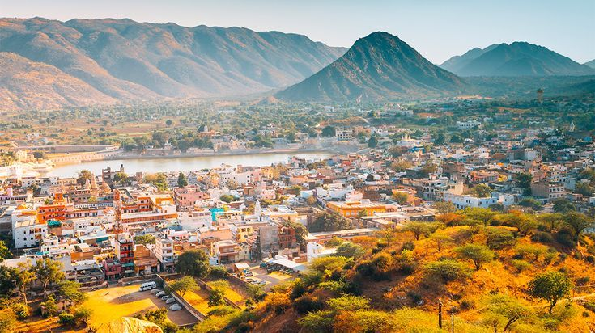
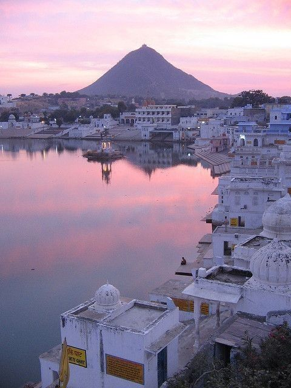
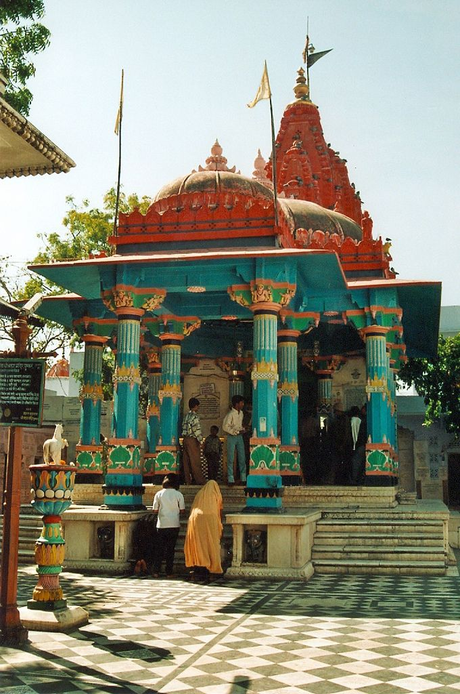
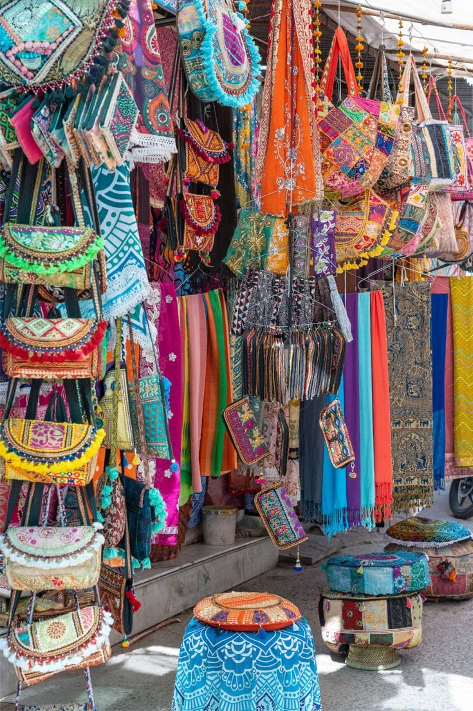
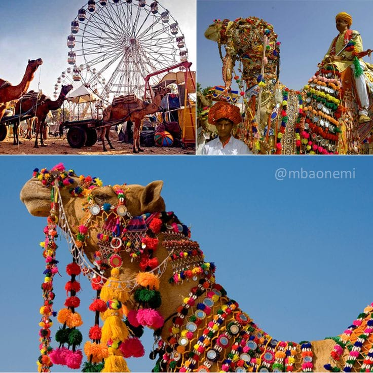
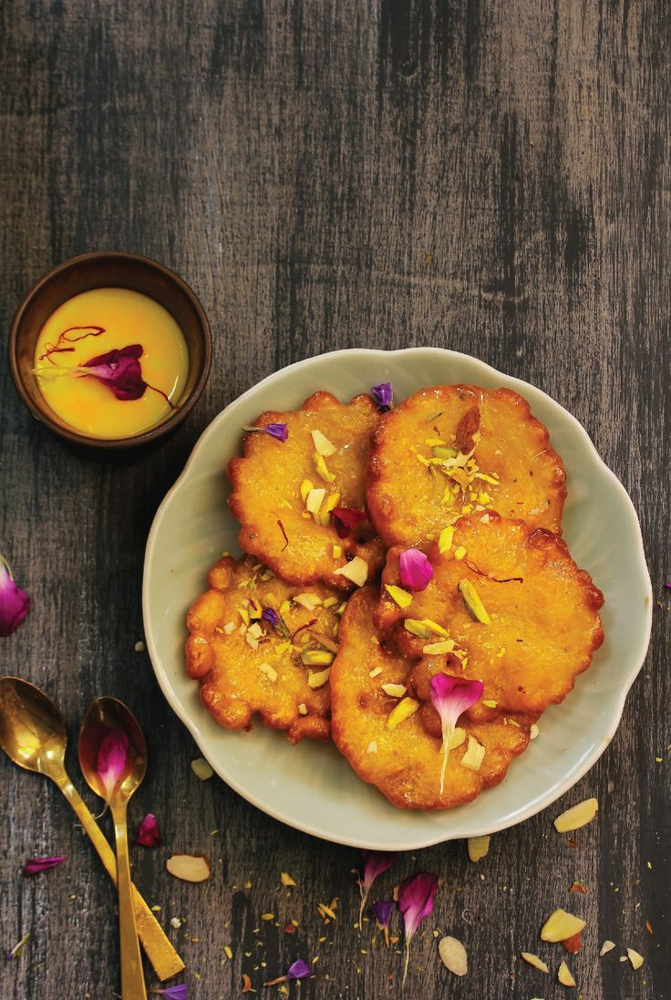

Pushkar Over_all View
Pushkar is a sacred town in Rajasthan, famous for its Brahma Temple and holy lake. It is a spiritual destination that also attracts tourists with its vibrant culture and annual camel fair.
Peaceful Nature Spot (Pushkar Lake)
Pushkar Lake is surrounded by ghats and temples, making it a peaceful and spiritual spot. Pilgrims take holy dips here, and visitors enjoy the serene atmosphere.


Historical Place (Brahma Temple)
The Brahma Temple in Pushkar is one of the few temples in the world dedicated to Lord Brahma. It holds immense religious significance and is a major pilgrimage site.
Local Market (Pushkar Bazaar)
Pushkar Bazaar is famous for handicrafts, jewelry, textiles, and souvenirs. It is a lively market that reflects the colorful spirit of Rajasthan.


Famous Festival (Pushkar Camel Fair)
The Pushkar Camel Fair is one of the largest livestock fairs in the world. It features camel trading, cultural performances, and competitions, making it a unique and vibrant event
Famous Local Food Item (Malpua)
Malpua is a sweet delicacy often enjoyed during festivals in Pushkar. Made with flour, milk, and sugar, deep-fried and soaked in syrup, it is a rich and indulgent treat.
